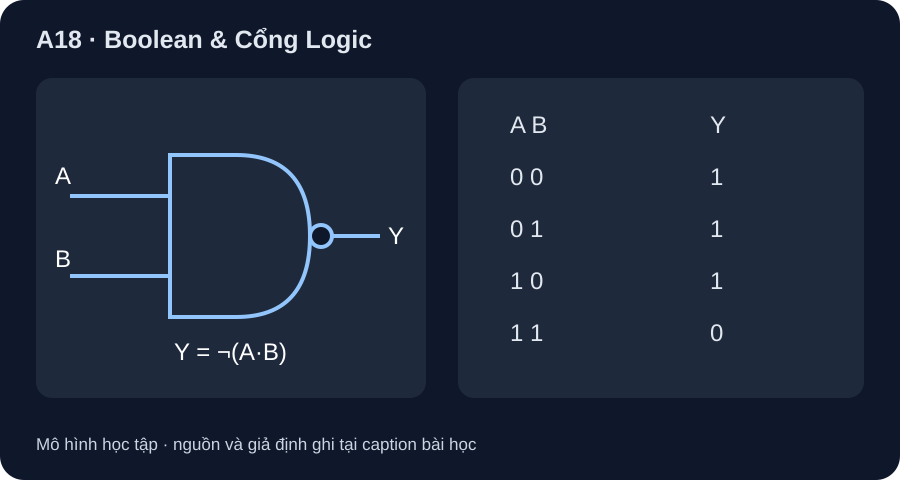

Boolean & Cổng Logic
Bảng chân trị là hợp đồng chức năng; NAND thật còn có điều kiện điện và thời gian.
- Lập đủ 2²=4 hàng cho hai biến Boolean A,B.
- Tính AND, OR, NOT và NAND theo từng hàng, không nhầm NAND với NOR.
- Kiểm định luật De Morgan bằng bảng chân trị thay vì chỉ thuộc công thức.

Đọc hình bằng chữ
A và B đi vào phép AND rồi đảo để ra Y. Với A B bằng 00, 01, 10, 11, phép AND lần lượt 0,0,0,1, nên NAND Y là 1,1,1,0. Hình chỉ chức năng của một cổng, chưa chỉ số chân và nguồn.
1. Phép logic và bốn hàng bắt buộc
Với hai bit A,B có 2²=4 đầu vào. A·B chỉ là 1 khi cả hai là 1; A+B là OR, không phải cộng số nguyên, nên 1+1=1 trong đại số Boolean. ¬A đảo từng bit. NAND là Y=¬(A·B); SN74HC00 của TI chứa bốn NAND hai đầu vào, nhưng bảng dưới chỉ áp cho trạng thái đầu vào hợp lệ sau khi tín hiệu ổn định.
| A | B | A·B | A+B | ¬A | ¬(A·B) |
|---|---|---|---|---|---|
| 0 | 0 | 0 | 0 | 1 | 1 |
| 0 | 1 | 0 | 1 | 1 | 1 |
| 1 | 0 | 0 | 1 | 0 | 1 |
| 1 | 1 | 1 | 1 | 0 | 0 |
2. De Morgan và hình cổng
De Morgan cho ¬(A·B)=¬A+¬B. Kiểm theo bốn hàng: vế phải là 1 nếu ít nhất một đầu vào bằng 0, nên cùng chuỗi 1,1,1,0 với NAND. Dấu tròn ở ngõ ra hình A18-1 biểu diễn đảo kết quả AND, không phải chỉ đảo A. Công thức đối ngẫu ¬(A+B)=¬A·¬B sẽ được kiểm ở bài tập.
3. Hoạt động tái lập
Tạo hai cột A,B đúng thứ tự 00,01,10,11. Tính từng cột AND, OR, NOT A, NAND; thêm hai cột ¬A, ¬B rồi OR chúng. So sánh cột NAND và ¬A+¬B từng hàng. Nếu dùng bảng tính, lưu công thức 0/1 và ảnh chụp bảng, không gọi đó là đo IC.
Bảng chân trị không chứa thời gian truyền, xung glitch, dòng ngõ ra hay mức điện áp. Mạch SN74HC00 thật cần VCC/decoupling, đầu vào hợp lệ và tải trong giới hạn datasheet; sơ đồ biểu tượng chưa là netlist lắp thử.
Chứng minh F=¬(A+B) bằng G=¬A·¬B với cả bốn hàng. F là loại cổng nào? Nếu A=B=1, tại sao không dùng phép cộng số nguyên 1+1=2?
- 1 điểm: liệt kê đủ 00,01,10,11.
- 1 điểm: F lần lượt
1,0,0,0. - 1 điểm: G cũng
1,0,0,0, nên F=G; F là NOR. - 1 điểm: dấu + là OR Boolean; 1 OR 1 = 1, sau đảo thành 0, không có giá trị 2.